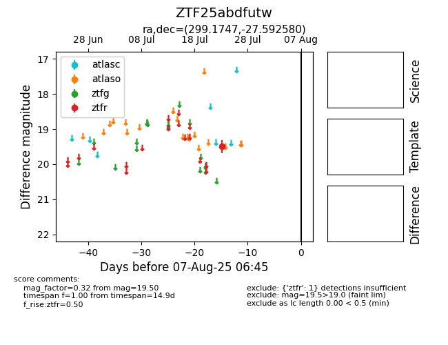

Target ZTF25abdfutw at 2025-08-06 17:45, see:
FINK: fink-portal.org/ZTF25abdfutw
Lasair: lasair-ztf.lsst.ac.uk/objects/ZTF25abdfutw
ALeRCE: alerce.online/object/ZTF25abdfutw
alt names
ZTF25abdfutw (ztf,fink)
coordinates:
equatorial (ra, dec) = (299.1747,-27.59258)
galactic (l, b) = (13.5820,-25.64435)
photometry
last ztfr=19.50
1 ztfr detections
